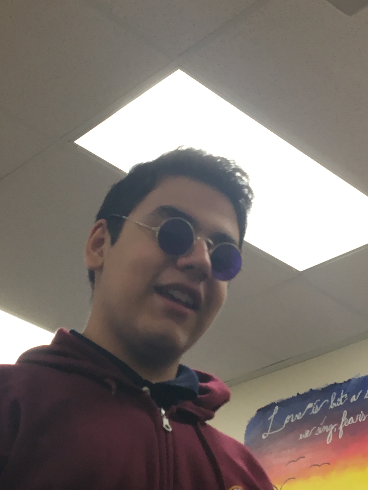
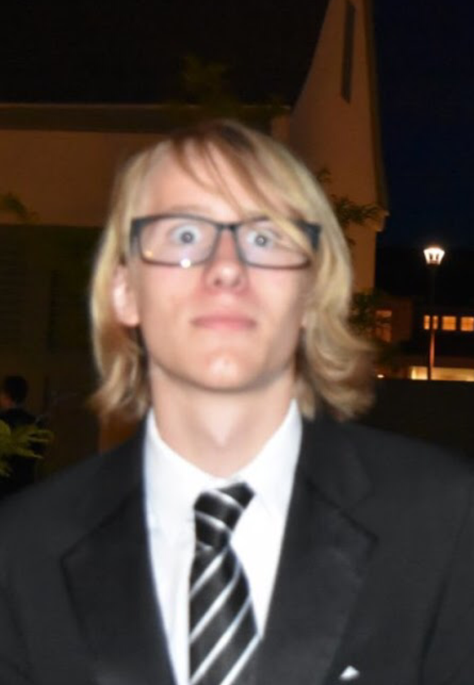
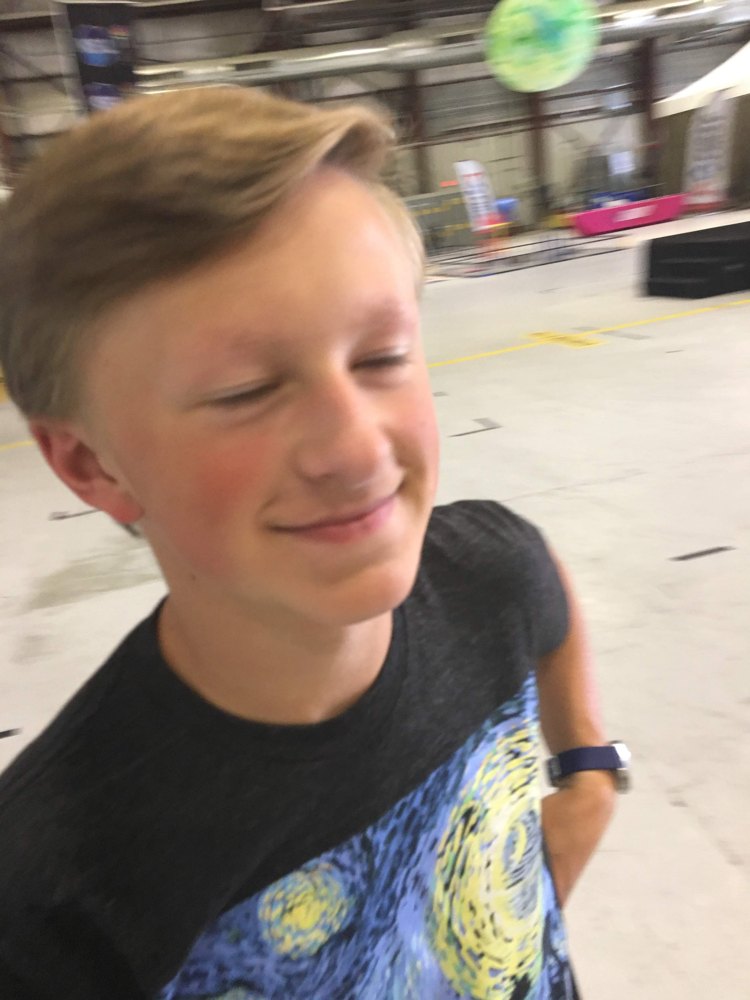
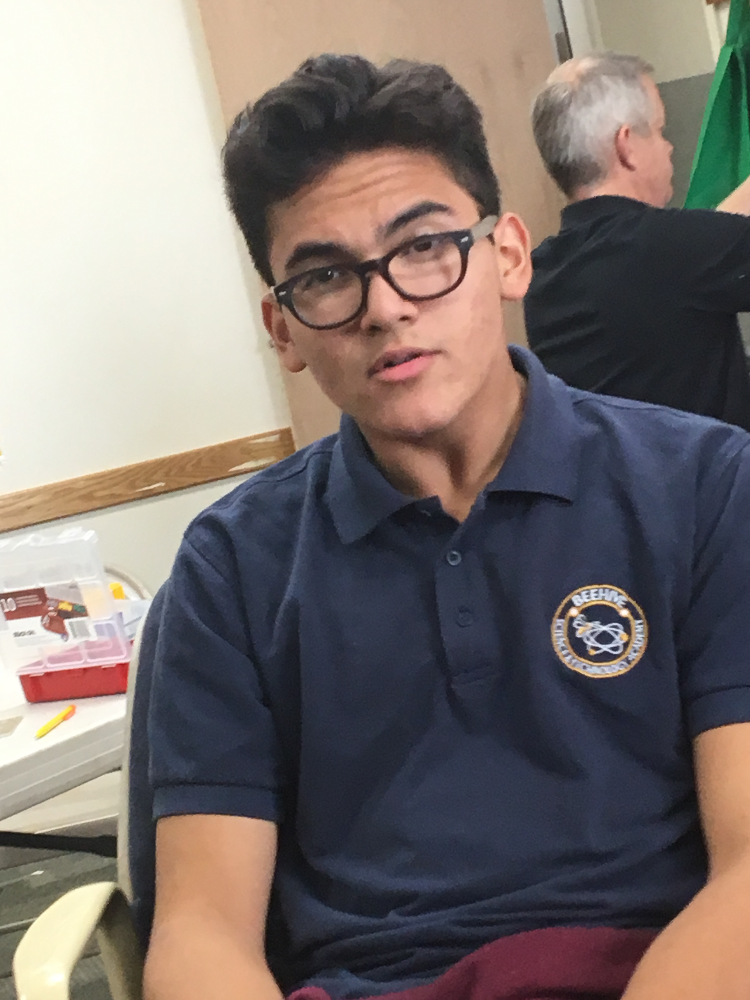
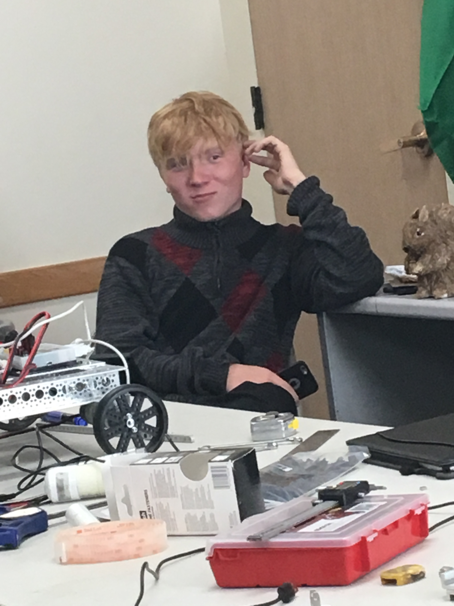
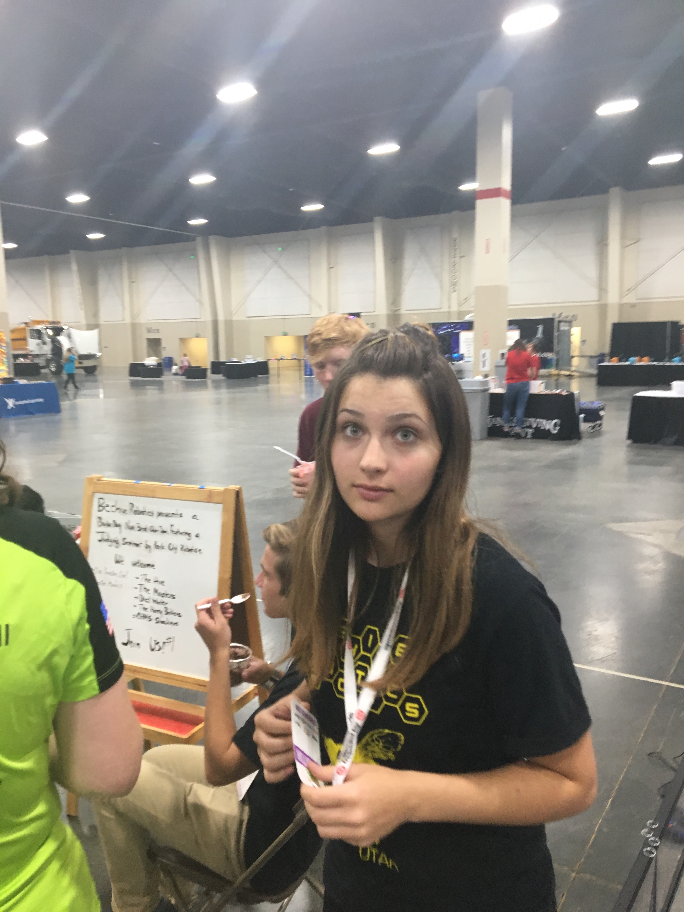
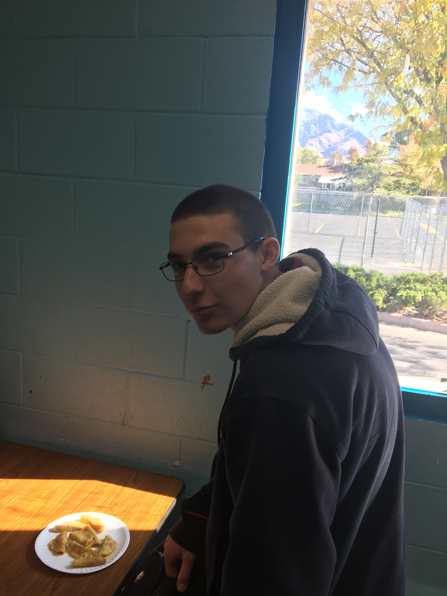
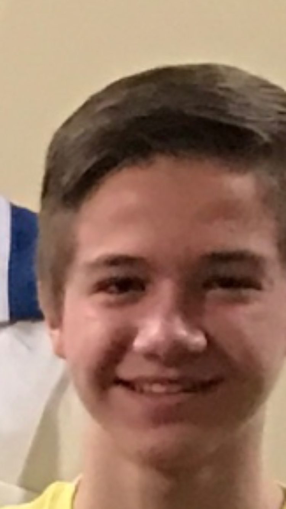

About Beehive Robotics
Beehive Robotics is an FTC (FIRST Tech Challenge) team with kids aged from 14-17. Our team has been active since 2009. Last year, our team went to the World Festival, where FTC teams from all around the world competed in.
Team Members

Asim
This is Asim's first year of FTC. He has done three years of FLL (FIRST Lego League) before this. He is still getting the hang of how everything works, but this is his 3rd year working with Trinity, so he's catching up quick.
Austin
This is Austin's second year of FTC, and his fourth year in the FIRST program. He did FLL for two years before he came over to FTC. Austin is the assistant programmer, helps maintain the GitHub repo for our code, and programmed this website.Gus
This is Gus' third year of FTC. He is the main money manager for our team. He also helps out with prototyping for our robot.
Kaden
This is Kaden's second year of FTC, and his fifth year in the FIRST program. Kaden's life is completely centered on FTC programming. He has learned several programming languages and build systems just for FTC, and loves digging into how it all works. He also loves the processs of debugging exactly what goes wrong where in the Autonomous programming.
Moises
This is Moises' second year of FTC, and his third year in the FIRST program. He has a wonderful engineering mind and works on the attachments of the robot, such as the gathering mechanism.
Nathan
This is Nathan's second year of FTC. Nathan is our “Jack-of-all trades.” He is in charge of our Engineering Notebook. He is always willing to help on a project. He also has a thirst for knowledge and is able to help anyone.
Trinity
This is Trinity's second year in FTC, and her seventh(!) year in the FTRST program. She mainly helps with building and designing the robot. She also enjoys driving the robot.
Zachary
Zach is a very creative and knowledgable high school student. He is always trying to apply advanced concepts into his designs. Zach is not only good at creative and interesting ideas, he also is skilled and knowledgeable at using tools.
Zack
This is Zack's second year in FTC, and his fourth year in the FTRST program. Zack's main role on the team is designing and constructing parts on the robot. He works in 3D printing parts, and does several custom parts for the robot. His main strength lies in building solid and dependable parts for the robot.About FTC
FTC is a robotics comptetion that anyone in grades 7-12 can participate in. There is a different challenge that students have to do each year.